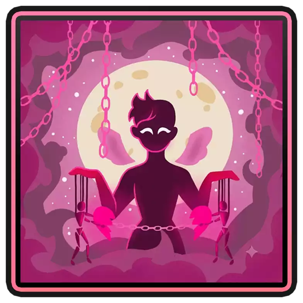
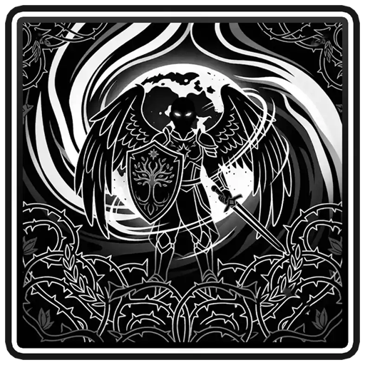
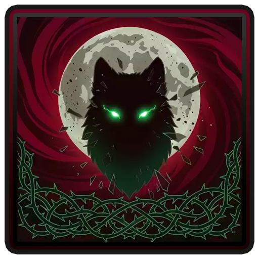
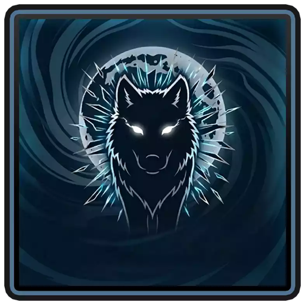
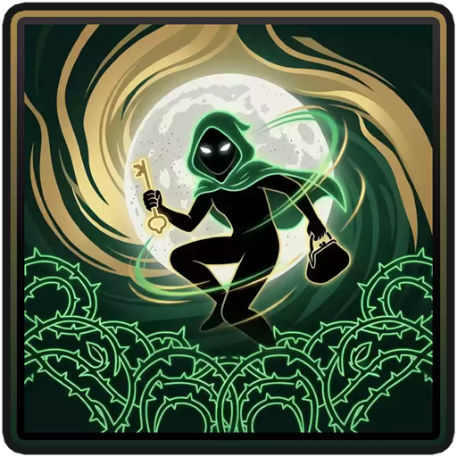
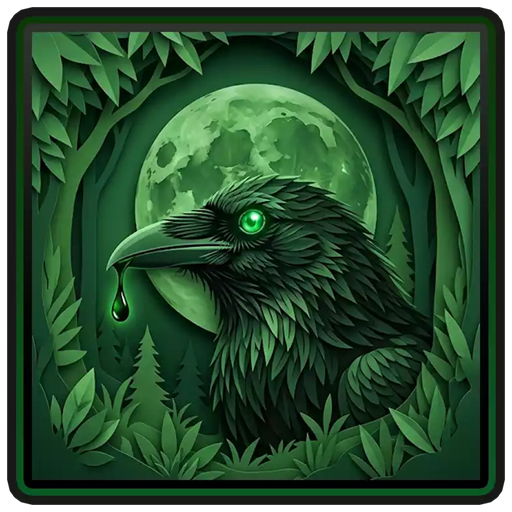
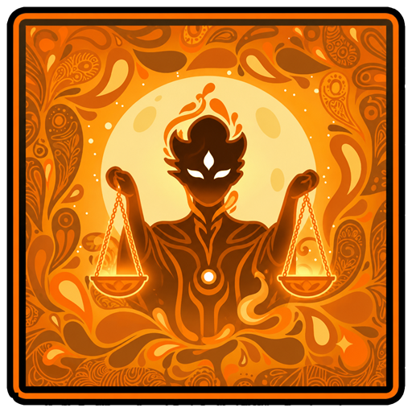

Une maison chacun
Chaque joueur reçoit sa maison sur la map. La nuit, les rôles agissent en cliquant sur les vraies portes et paillassons du village.
Le Loup-Garou de Thiercelieux, joué pour de vrai dans Minecraft : chacun sa maison, on frappe aux portes la nuit, on se retrouve au feu de camp le matin — et on vote au bûcher.
Ici, pas de menu à cliquer depuis le spawn. Tout se joue avec son corps : on marche jusqu'à la bonne porte, on la frappe, on se cache, on ment les yeux dans les yeux.
Chaque joueur reçoit sa maison sur la map. La nuit, les rôles agissent en cliquant sur les vraies portes et paillassons du village.
Tout le monde est aveuglé. Seul le rôle dont c'est le tour rouvre les yeux, le temps de son créneau, dans l'ordre officiel de la nuit.
Éclair sur le bûcher, glas, puis révélation : la carte du défunt est accrochée au-dessus de sa porte et du feu de camp.
Un resource pack envoyé automatiquement : 15 cartes illustrées, chant du coq, hurlements, cloche du vote. Et vos propres sons si vous le voulez.
Pendant son créneau, le Loup devient loup et la Sorcière sorcière. Déposez un PNG, le plugin s'occupe de la signature Mojang.
Plusieurs parties en parallèle, une boussole pour rejoindre un salon, un lancement automatique quand il est plein.
Élection du Capitaine au premier jour (vote double, il tranche les égalités) et +2 voix discrètes offertes par le Corbeau.
Durée de chaque rôle via un menu en jeu, composition des rôles par salon, durée du débat et des votes dans config.yml.
Le plugin appelle les rôles un par un, dans cet ordre. Un rôle absent de la partie (ou mort) est simplement sauté.

Cupidonunit deux amoureux · 40 s
Salvateurprotège une maison · 30 s
Infect Pèrepeut infecter · 30 s
Loup Blanctue en solitaire · 20 s
Voleuréchange deux rôles · 25 s
Corbeau+2 voix à quelqu'un · 15 s
Jugeune nuit sur deux · 25 sÀ l'aube : annonce des morts au feu de camp, débat (2 min), élection du Capitaine le premier jour, puis vote du village. Tout le déroulement →
Le Village doit éliminer les loups. Les Loups doivent dévorer le village. Et le Loup Blanc veut être le dernier debout.
Un fichier .jar, un resource pack, une map avec des maisons. Votre premier village peut ouvrir ce soir.